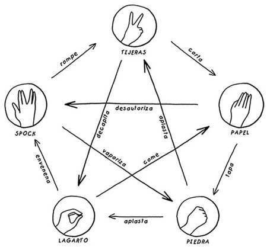

CAPITULO 8
UN PROGRAMA DE MAXIMA AUDIENCIA

Despues de tanto tiempo encontraron tantas bromas matematicas que nestler ddecidio hacer una base da datos
de ecenas que pudieran interesar a los matematicos.
Empesaron a enseñar Greenwald como Nestler empezaron a incorporar escenas de los simpson en sus clases. la tesis de Nestler trataba de la teoria algebraica
de los numeros, usaba matematicas de la comedia en sus cursos de algebra lineal y matematicas finitas.
Hay cuatro numeros perfectos el primero es 6, el segundo es 28, el tercero es 496 y el cuarto es 8128
se consideran perfectos si sus divisores excepto el propio numero sumados dan un numero en cuestion y sin que quede ningun resto.
Ejemplo el 28 por que 1,2,4,7, y 14 son divisores de 28, y 1+2+4+7+14=28.
Los numeros perfectos, como los hombres perfectos, son muy escasos.Todos los numeros perfectos descubiertos hasta ahora son pares.
